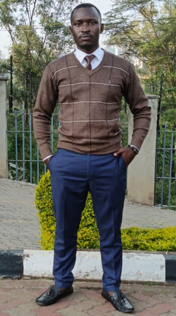

Daniel Simiyu Nyongesa | WDD 130

Hello, my name is Daniel from Kenya. I was so happy to attend the ward conference as a new member! I felt the renewal of the happiness I had when I was young.

Hello, my name is Daniel from Kenya. I was so happy to attend the ward conference as a new member! I felt the renewal of the happiness I had when I was young.